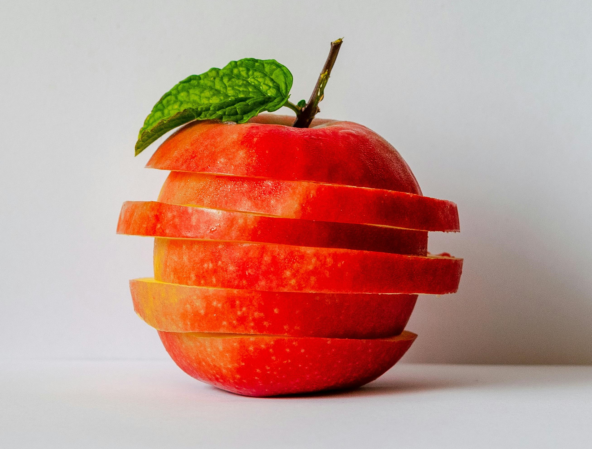

A Maçã é uma fruta que ajuda a prevenir doenças cardiovasculares e a diabetes, combater a prisão de ventre, evitar o envelhecimento precoce e fortalecer o sistema imunológico, já que essa fruta possui boas quantidades de carotenoides e flavonoides, que são compostos bioativos com propriedades antioxidantes.
Além disso, a Maçã é rica em fibras e tem baixo índice glicêmico, contribuindo para prolongar a saciedade e diminuir a vontade de comer ao longo do dia, promovendo o emagrecimento. Veja outros alimentos com baixo índice glicêmico.
Existem diferentes tipos de Maçã, como a verde, a gala ou a fugi, que podem ser consumidas ao natural ou ser usada em preparações como salada de frutas, vitaminas, compotas ou em preparações salgadas, como salada ou vinagrete. Já a casca da Maçã também pode ser usada para o preparo de chás.
Os 13 principais benefícios da Maçã
- 1. Previne doenças cardiovasculares: A Maçã é rica em pectina, um tipo de fibra que diminui a absorção de gorduras, auxiliando na redução dos níveis de colesterol no sangue e prevenindo contra doenças cardiovasculares, como infarto, aterosclerose ou derrame. Além disso, a Maçã possui flavonoides e carotenoides, compostos bioativos com ação antioxidante que impedem a oxidação das células de gordura, auxiliando no equilíbrio nos níveis de colesterol ruim, o LDL, no sangue.
- 2. Previne e equilibra a diabetes: A Maçã tem boas quantidades de polifenóis, compostos com ação antioxidante que protegem as células do pâncreas contra os danos causados pelos radicais livres, melhorando a função do hormônio insulina e prevenindo a resistência à insulina e a diabetes. Por ter ótimas quantidades de fibras, a Maçã também diminui a absorção de açúcar, promovendo o equilíbrio nos níveis de glicose no sangue.
- 3. Facilita o emagrecimento: A Maçã é rica em fibras e água que ajudam a prolongar a sensação de saciedade por mais tempo, o que diminui a vontade de comer ao longo do dia e promove o emagrecimento. Além disso, a Maçã tem baixo teor de calorias, sendo uma ótima opção para incluir em dietas para perda de peso.
- 4. Combate a prisão de ventre: A Maçã contém celuloses, hemiceluloses, ligninas e pectinas, fibras que ajudam a aumentar a absorção de água no intestino, auxiliando na forMaçao e eliminação das fezes. Além disso, a Maçã contém pectina, uma fibra prebiótica que serve de alimento para as bactérias benéficas do intestino, equilibrando a flora intestinal e auxiliando no combate à prisão de ventre.
- 5. Equilibra a pressão arterial: A Maçã é rica em potássio, um mineral que facilita a eliminação do excesso de sódio do organismo pela urina, auxiliando no equilíbrio da pressão arterial. Os antioxidantes presentes em boas quantidades na Maçã também ajudam a manter a saúde das artérias e melhorar a circulação de sangue, prevenindo a pressão alta.
- 6. Auxilia no tratamento de gastrite e úlceras: As fibras da Maçã, especialmente a pectina, ajudam a formar um gel que protege a mucosa do estômago, neutralizando os danos causados pelo excesso de ácido do estômago, auxiliando no tratamento da gastrite e úlceras gástricas. As catequinas e os carotenoides, compostos bioativos presentes na Maçã, também possuem propriedades antimicrobianas, podendo auxiliar no combate ao Helicobacter pylori, uma bactéria responsável pela gastrite, úlcera e câncer de estômago.
- 7. Previne o câncer: Os polifenóis presentes na Maçã possuem ação antioxidante e anti-inflamatória que previnem os danos causados pelo excesso de radicais livres às células, auxiliando na prevenção de alguns tipos de câncer, como de pulmão, de mama e de cólon.
- 8. Ajuda a evitar cáries: A Maçã contém boas quantidades de ácido málico, composto que aumenta a produção de saliva, inibindo a multiplicação das bactérias responsáveis pela formação da placa bacteriana e ajudando a evitar a cárie.
- 9. Evita Alzheimer: A Maçã contém flavonoides, como a quercetina, que têm ação antioxidante, protegendo as células do sistema nervoso central contra os radicais livres e evitando o Alzheimer. Além disso, os flavonoides presentes na Maçã melhoram a circulação de sangue e evitam inflamações nas células do cérebro, melhorando a memória e prevenindo a demência.
- 10. Retarda o envelhecimento precoce: Por ser rica em antioxidantes, a Maçã é uma ótima opção para evitar os danos causados pelos radicais livres na pele, prevenindo a flacidez e as rugas. Além disso, as fibras presentes na Maçã evitam a formação de produtos de glicação avançada (AGEs), compostos produzidos no organismo com o consumo excessivo de alimentos com alto índice glicêmico, como pão branco, doces ou bolos, e que causam inflamação e envelhecimento precoce.
- 11. Ajuda a combater a ansiedade: A Maçã contém pectina, uma fibra prebiótica que serve de alimento para as bactérias benéficas do intestino, contribuindo para a manutenção da saúde da flora intestinal, fundamental para combater e prevenir a ansiedade.
- 12. Fortalece o sistema imunológico: Por ter boas quantidades de carotenoides e flavonoides, compostos com ação antioxidante e anti-inflamatória, a Maçã ajuda a proteger e melhorar as funções das células do sistema imunológico contra infecções e evitar situações, como gripes e resfriados.
- 13. Previne a asma e rinite: A Maçã contém quercetina, um flavonoide com potente ação imunomoduladora que fortalece as células do sistema imunológico e inibe as células que causam a inflaMação, ajudando na prevenção da asma, rinite e bronquite.
Tabela de informação nutricional
A tabela a seguir traz a composição nutricional em 150g de Maçã com casca e sem casca:
| Componentes | 150g de Maçã com casca | 150g de Maçã sem casca |
| Energia | 96 calorias | 91,5 calorias |
| Proteínas | 0,3 g | 0,3 g |
| Gordura | 0,75 g | 0,75 g |
| Carboidratos | 20,1 g | 19 g |
| Fibras | 3,1 calorias | 2,8 calorias |
| Vitamina A | 6,0 mcg | 6,0 mcg |
| Carotenoide | 39 mcg | 37,5 mcg |
| Vitamina E | 0,8 mg | 0,4 mg |
| Vitamina C | 10,5 mg | 7,55 mg |
| Potássio | 210 mg | 180 mg |